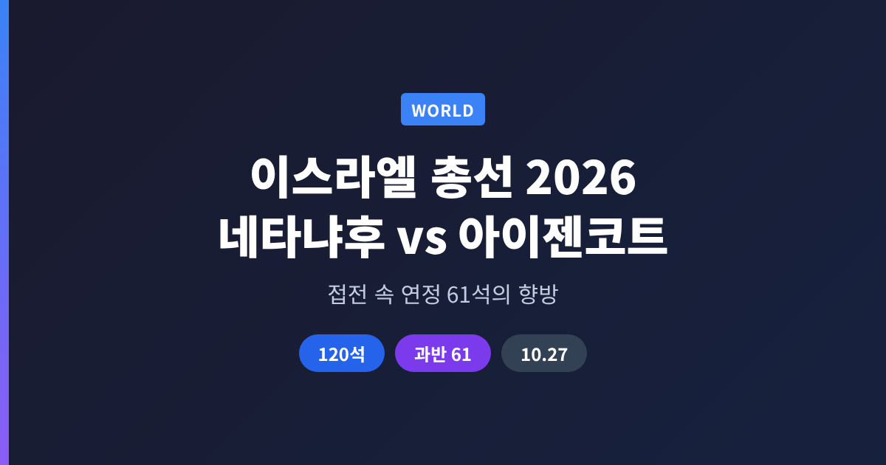
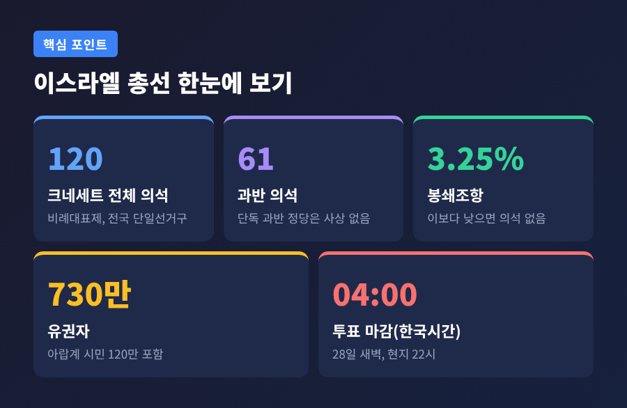
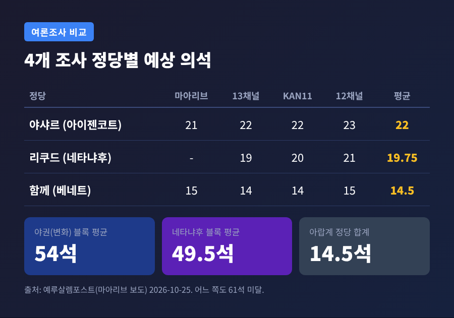
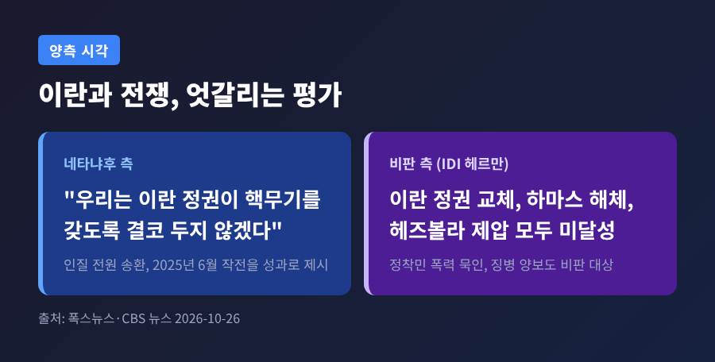
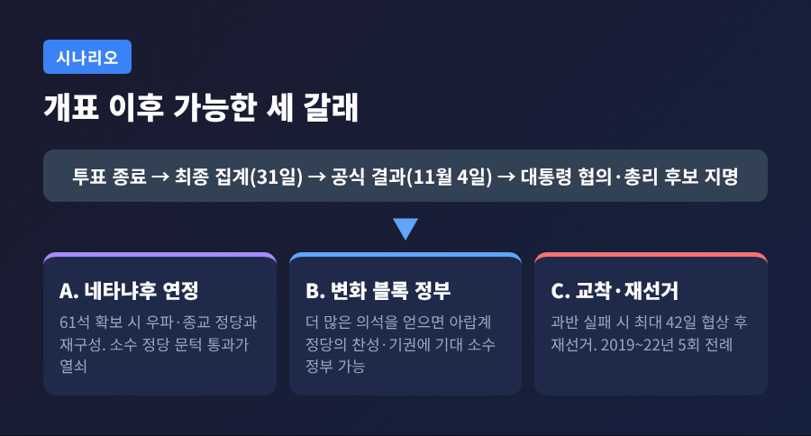
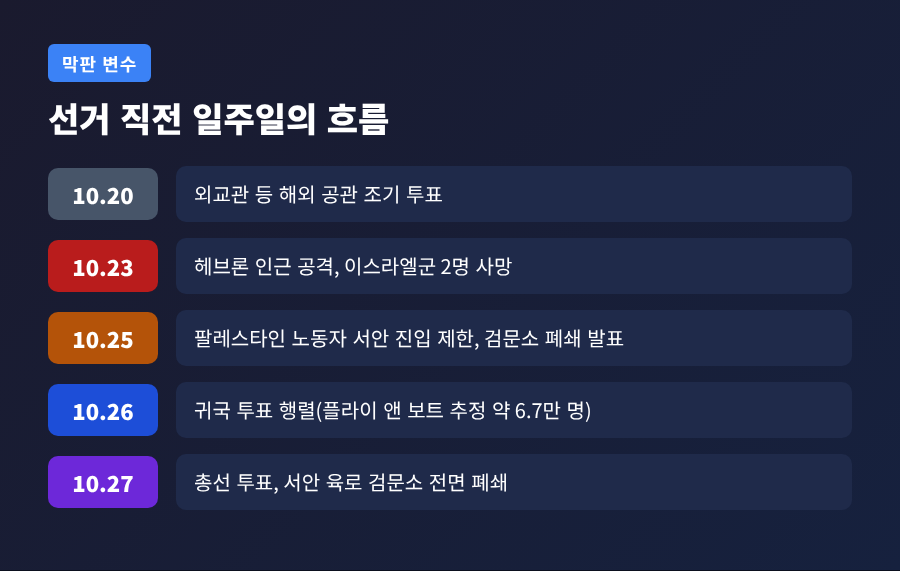

오늘은 2026년 10월 27일에 치러진 이스라엘 총선을 정리해 보려 합니다. 네타냐후 총리의 블록과 아이젠코트 전 참모총장이 이끄는 야권 블록이 박빙으로 맞서고 있습니다. 판세, 쟁점, 개표 이후의 시나리오를 차례로 살펴보겠습니다.
3줄 요약
1. 이스라엘 총선은 27일(현지 07시~22시) 치러졌고, 한국시간 28일 새벽 4시에 투표가 마감됩니다. 이 글을 쓰는 시점에는 결과가 나오지 않았습니다.
2. 최종 여론조사에서는 어느 진영도 과반인 61석에 닿지 못했습니다. 4개 조사 평균은 야권 54석, 네타냐후 블록 49.5석입니다.
3. 서안 검문소 폐쇄와 해외 거주자 귀국 투표가 막판 변수로 떠올랐습니다.
이스라엘은 27일 화요일, 크네세트 120석을 새로 뽑는 총선을 치릅니다. 2023년 10월 7일 하마스 공격 이후 처음 열리는 전국 단위 선거입니다. 투표는 현지 시각 오전 7시에 시작해 밤 10시에 끝납니다. 유권자는 약 730만 명이고, 이 가운데 120만 명이 팔레스타인계 이스라엘 시민입니다. (알자지라, 10월 27일)
제도부터 짚어 둘 필요가 있습니다. 이스라엘은 정당에 투표하는 비례대표제입니다. 득표율 3.25%를 넘어야 의석을 얻습니다. 단독 과반을 얻은 정당은 지금까지 한 번도 없었습니다. 그래서 선거는 늘 연정 산수의 싸움이 됩니다.

개표 일정도 길게 이어집니다. 투표 종료 직후 출구조사가 방송되고, 최종 집계는 31일 금요일까지 나올 전망입니다. 공식 결과는 11월 4일 공표됩니다. 이후 헤르조그 대통령이 정당 대표들을 만나 총리 후보를 지명하고, 후보는 최대 42일 안에 정부를 꾸려야 합니다. (알자지라) 투표율과 출구조사 결과는 아직 확인되지 않았습니다.
이번 선거는 사실상 네타냐후 총리에 대한 신임 투표로 읽힙니다. 네타냐후 총리는 이스라엘 최장수 총리입니다. 1996년 처음 당선됐고, 2009년부터 2021년까지, 그리고 2022년 말부터 다시 집권하고 있습니다. (CBS 뉴스, 폭스뉴스)
예전에는 전쟁이 안보 지도자의 입지를 굳혀 준다고들 했습니다. 지금은 3년째 이어진 다전선 전쟁의 피로가 판세를 흔들고 있습니다. 이스라엘은 이란과 두 차례 직접 충돌했고, 가자와 레바논에서도 작전을 벌여 왔습니다. (CBS 뉴스, 10월 26일)
선거 결과는 이스라엘 안에서 그치지 않습니다. 트럼프 미국 대통령이 네타냐후 총리를 공개 지지했습니다. CBS 뉴스에 따르면 트럼프 대통령은 네타냐후 총리가 물러나면 이란과의 전쟁을 이어 가지 않겠다는 취지로 말했다고 합니다. 이스라엘의 정권 향방이 미국의 중동 정책과도 맞물려 있다는 뜻입니다.
네타냐후 총리의 리쿠드는 지난 의회에서 32석이었고, 신희망과의 합당으로 선거 전 36석이 되었다고 합니다. 연정 파트너는 벤그비르의 오츠마 예후디트, 스모트리치의 종교시온주의당, 초정통파 정당 샤스와 연합토라유대교입니다. (위키백과, 폭스뉴스)
맞서는 쪽의 선두는 가디 아이젠코트 전 참모총장입니다. 중도 신당 야샤르를 이끌고 있으며, 전쟁 초기에는 전시내각에 참여했습니다. 핵심 공약은 10.7 사태의 정보·안보 실패를 다룰 국가조사위원회 설치입니다. 네타냐후 총리는 지금까지 이를 막아 왔습니다. (CBS 뉴스) 나프탈리 베네트 전 총리의 '함께', 리베르만의 이스라엘 베이테누, 골란의 민주당, 아랍계 정당들도 변화 블록에 속합니다.

최종 여론조사는 이렇습니다. 마아리브, 13채널, KAN11, 12채널 네 곳의 평균은 야샤르 22석, 리쿠드 약 19.8석, 베네트의 '함께' 14.5석입니다. 블록으로 묶으면 야권이 54석, 네타냐후 블록이 49.5석이고, 아랍계 정당이 합쳐 14.5석입니다. 하레츠가 10월 23일 기준으로 집계한 평균도 50석 대 54석으로 비슷합니다. (예루살렘포스트, 10월 25일, 알자지라)
다만 이 숫자를 곧이곧대로 믿기는 어렵습니다. 우파 성향 조사기관은 네타냐후 블록에, 좌파 성향 조사기관은 변화 블록에 유리한 결과를 내는 경향이 있다고 CBS 뉴스는 전합니다. 이스라엘민주주의연구소의 플레스너 소장은 결론이 나지 않는 결과가 가장 유력하다고 내다봤습니다.
네타냐후 총리 측의 가장 큰 카드는 이란입니다. 총리는 "우리는 이란 정권이 핵무기를 갖도록 결코 두지 않겠다"고 밝혔습니다. 2025년 6월 '일어나는 사자' 작전을 성과로 내세웁니다. 인질 전원 송환도 트럼프 대통령과 조율한 결과라고 강조합니다. 하마스와 헤즈볼라의 무장해제를 위해 시간이 더 필요하다는 논리입니다. (폭스뉴스, CBS 뉴스)
반대편의 시각은 다릅니다. 이스라엘민주주의연구소의 타마르 헤르만 연구원은 이란 정권 교체, 하마스 해체, 헤즈볼라 제압에 모두 성공하지 못했다고 평가했습니다. 정착민 폭력을 묵인하고 초정통파에 징병 문제로 양보했다는 비판도 따릅니다. 반면 마이클 오렌 전 주미대사는 총리를 '역사의 지도자'로 보는 시각을 내놓았습니다. 두 평가가 모두 존재합니다.

징병 문제는 이번 선거를 앞당긴 원인으로 꼽힙니다. 하레디, 곧 초정통파 청년의 군 복무를 둘러싼 갈등이 연정을 거듭 흔들었습니다. 제25대 크네세트는 7월 17일 해산됐고, 4년 임기를 모두 채운 것은 1988년 이후 처음이라는 설명도 있습니다. (위키백과)
CBS 뉴스에 따르면 봉쇄조항 언저리에 있는 신생 정당 두 곳도 초정통파 의무복무를 요구합니다. 이 요구는 네타냐후 총리의 연정 파트너와 지지 기반을 겨냥합니다. 우파 표가 갈라질 가능성도 변수입니다. 오페르 윈터의 정당은 리쿠드와 다투며 문턱 부근에 있고, 헨델-젤레크하 명부는 평균 3.10%로 문턱에 0.15%포인트 모자랍니다. (예루살렘포스트)
이 작은 정당들이 문턱을 넘느냐에 따라, 넘지 못한 표가 버려져 상대 블록의 의석 비중이 달라집니다. 몇 석이 승패를 가를 수 있습니다.

선거를 사흘 앞둔 10월 23일, 헤브론 인근에서 팔레스타인 무장대원 2명이 이스라엘 예비군 시설을 공격해 군인 2명이 숨졌습니다. 무장대원 2명도 숨졌습니다. 이스라엘군은 25일 팔레스타인 노동자의 서안 진입을 대부분 막았고, 선거 당일에는 서안으로 통하는 모든 육로 검문소를 닫았습니다. 헤브론에서는 약 2,000명이 집을 떠나야 했습니다. 시장은 2,200명이라고 밝혔습니다. (알자지라, 10월 25일)
이스라엘 정부는 안보 조치라는 입장입니다. 카츠 국방장관은 '하마스 문제'가 해결될 때까지 주민이 돌아갈 수 없다고 했습니다. 팔레스타인 자치정부는 집단처벌이라며 국제사회의 압력을 요구했고, 일부 분석가는 안보 불안이 총리의 재선 전략에 쓰인다고 봅니다. 사실관계의 해석은 갈립니다. 선거 판세에 어떤 영향을 줄지는 확인되지 않았습니다.
또 하나의 변수는 해외 거주자입니다. 이스라엘은 외교관 등을 제외하면 부재자 투표를 허용하지 않아, 투표하려면 직접 귀국해야 합니다. 미국 단체 '플라이 앤 보트'는 약 6만 7천 명이 귀국해 투표할 것으로 추정합니다. 실제 입국 집계가 아니라 설문과 등록 자료를 바탕으로 한 추정치입니다. 이스라엘민주주의연구소는 박빙이라면 두 석 가까이를 좌우할 수 있다고 봅니다. (JTA, 10월 26일)

정부 측이 이 단체에 법적 조치를 취했으나 10월 대법원이 막았고, 벤구리온 공항 운항을 늦추는 방안까지 검토했다고 보도됐습니다. 분석가들은 네타냐후 총리 측이 귀국자 다수가 야권에 투표할 것으로 본다고 해석합니다.
가능한 길은 대략 세 갈래입니다.
의원이 선거 공약과 달리 진영을 옮긴 사례도 있어서, 개표 직후의 숫자만으로 결론을 내리기는 이릅니다. 또 아랍계 유권자는 인구의 약 20%이며, 이들의 투표율이 높을수록 네타냐후 총리가 정부를 꾸리기 어려워진다는 분석이 있습니다.
중동과 미국에 주는 의미는 이렇게 정리할 수 있습니다. 네타냐후 총리가 이어 간다면 이란에 대한 강경 노선과 미국과의 긴밀한 조율이 유지될 가능성이 큽니다. 야권이 집권하면 10.7 조사위원회와 초정통파 징병 문제가 먼저 의제에 오를 전망입니다. 다만 야권 안에도 중도·좌파·우파·아랍계 정당이 섞여 있어 대외 정책이 어떻게 모아질지는 확인되지 않았습니다. 결과를 단정하지 않고, 개표를 지켜봐야 합니다.
정리하면 이렇습니다. 이번 선거는 한 사람의 거취만이 아니라 전쟁 이후 이스라엘이 어디로 향할지를 묻는 표결입니다.
"숫자는 접전이고, 답은 아직 열려 있다." 지금 확실한 것은 이 한 줄뿐입니다.
개표가 끝나면 어느 쪽 이야기가 맞았는지 다시 짚어 보겠습니다.
※ 이 글은 2026년 10월 27일 저녁(한국시간) 시점의 보도를 바탕으로 쓴 해설이며, 특정 정당이나 후보를 지지하거나 비판하려는 목적이 없습니다. 결과가 확정되기 전의 전망은 달라질 수 있습니다.